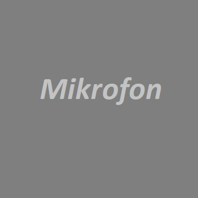
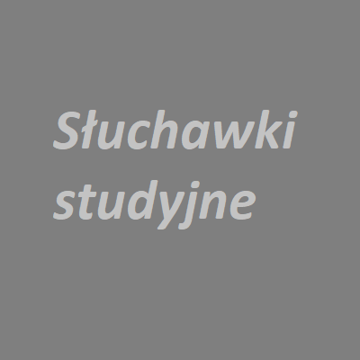
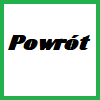

Moja pasja
Nagrywam Rap, pozwala on wyrzucić z siebie negatywne emocje. Przez tą muzykę którą pokochałem zmotywowałem się do robienia wielu rzeczy, rap pozwala pracować nad sobą, doskonalić wiedzę.
Nawet wiedza z fizyki może się tutaj przydać. Przy mixie i budowie studio trzeba zadbać o akustykę pomieszczenia co bezpośrednio wiąże się z muzyką. Sama wiedza fizyczna może być użyta do porównań w utworach. Przykładem jest tu utwór Efekt Dopplera którego autorami są Quebonafide i Gedz:
" Liczy się tylko to, co mamy teraz Raz bliżej raz, dalej jak efekt dopplera Raz bliżej raz, dalej jak efekt dopplera Jesteśmy raz bliżej, raz dalej jak efekt dopplera"
Mój utwór Platon
Sprzęt którego używam:
 
